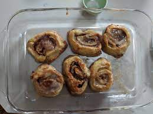

Cinnamon Rolls

Description
If you're prepared to be disappointed with your results, proceed!
Otherwise, please just buy these from the store.
Ingredients
- 1/2 cup of white sugar
- 1 tbsp brown cinnamon
- 1 package of refrigerated cinnamon roll dough
- 1/4 cup of melted, unsalted butter
Steps
-
Preheat the oven to 400 degrees F (200 degrees C). Grease a 9x5-inch
loaf pan.
- Mix sugar and cinnamon together in a bowl.
-
Set icing packet aside. Cut cinnamon rolls into quarters. Dip pieces in
melted butter, coat in cinnamon-sugar, and place in the prepared pan.
-
Bake in the preheated oven until dough has risen and top is golden
brown, 20 to 25 minutes; drizzle icing over top and let cool in the pan
for 5 minutes. Turn the monkey bread out onto a plate and serve warm.